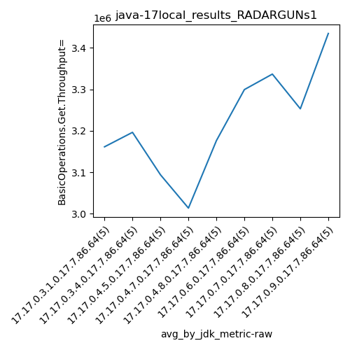
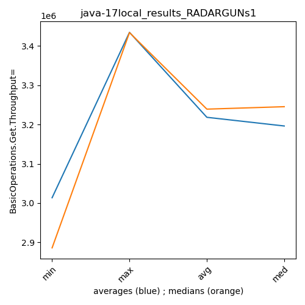

java-17 RADARGUNs1
Context at bottom
/home/jvanek/git/benchmarks-in-nested-virtualisation-toolchain/final_results/local_results/local_results_J2DBENCH
java-17
RADARGUNs1
/home/jvanek/git/benchmarks-in-nested-virtualisation-toolchain/final_results/local_results/local_results_SPECJBB
java-17
RADARGUNs1
/home/jvanek/git/benchmarks-in-nested-virtualisation-toolchain/final_results/local_results/local_results_RADARGUNs1
java-17
RADARGUNs1
local_results_RADARGUNs1
- local_results_RADARGUNs1 - throughput get
- local_results_RADARGUNs1 - throughput put
- local_results_RADARGUNs1 - response mean time get
- local_results_RADARGUNs1 - response mean time put
local_results_RADARGUNs1 - throughput get
Expected number of java-17 JDKs: 9
1st avgmed_alljdks_metric:
/home/jvanek/git/benchmarks-in-nested-virtualisation-toolchain/final_results/result_processing.py /home/jvanek/git/benchmarks-in-nested-virtualisation-toolchain/final_results/local_results/local_results_RADARGUNs1 BasicOperations.Get.Throughput= False
values: [3295194, 2913544, 3214399, 3141478, 3242274, 3245305, 2844602, 3319646, 3332302, 3239356, 2835330, 3269766, 3190506, 3353186, 2821270, 2886224, 3291535, 2816537, 3272257, 2802128, 3289990, 2918258, 3322136, 3062112, 3288899, 3288422, 3357044, 3383685, 3332016, 3135079, 3261141, 3408677, 3357811, 3357412, 3297753, 3194148, 3203315, 3374653, 3159343, 3333485, 3427427, 3433805, 3467326, 3455342, 3388424]

Expected number of iterations: 5
final number of values: 45 out of 45
Pass rate: 100.0%
values: (2802128, 3467326, 3218323.1555555556, 3288422)

** accuracy from all jdks and runs
more is better
MIN: 2802128
MAX: 3467326
AVG: 3218323.1555555556
MED: 3288422
Relative differences 1:
MIN-MAX: 19.0 %
MIN-AVG: 13.0 %
MIN-MED: 15.0 %
MAX-MIN: -24.0 %
MAX-AVG: -8.0 %
MAX-MED: -5.0 %
AVG-MED: 2.0 %
stored to java-17.properties. sort | uniq that!
2nd avgmed_by_jdk_metric:
values: [3161377.8, 3196242.2, 3094011.6, 3013736.2, 3176279.0, 3299249.2, 3336558.8, 3252988.8, 3434464.8]

values: [3214399, 3245305, 3190506, 2886224, 3288899, 3332016, 3357412, 3203315, 3433805]

values: (3013736.2, 3434464.8, 3218323.1555555556, 3196242.2)
values: (2886224, 3433805, 3239097.888888889, 3245305)

** accuracy from all jdks where runs were avged
more is better
MIN: 3013736.2
MAX: 3434464.8
AVG: 3218323.1555555556
MED: 3196242.2
Relative differences 1:
MIN-MAX: 12.0 %
MIN-AVG: 6.0 %
MIN-MED: 6.0 %
MAX-MIN: -14.0 %
MAX-AVG: -7.0 %
MAX-MED: -7.0 %
AVG-MED: -1.0 %
stored to java-17.properties. sort | uniq that!
** accuracy from all jdks where runs were medianed
more is better
MIN: 2886224
MAX: 3433805
AVG: 3239097.888888889
MED: 3245305
Relative differences 1:
MIN-MAX: 16.0 %
MIN-AVG: 11.0 %
MIN-MED: 11.0 %
MAX-MIN: -19.0 %
MAX-AVG: -6.0 %
MAX-MED: -6.0 %
AVG-MED: 0.0 %
stored to java-17.properties. sort | uniq that!
local_results_RADARGUNs1 - throughput put
Expected number of java-17 JDKs: 9
1st avgmed_alljdks_metric:
/home/jvanek/git/benchmarks-in-nested-virtualisation-toolchain/final_results/result_processing.py /home/jvanek/git/benchmarks-in-nested-virtualisation-toolchain/final_results/local_results/local_results_RADARGUNs1 BasicOperations.Put.Throughput= False
values: [823834, 728422, 803669, 785330, 810562, 811313, 711114, 829943, 833084, 809763, 708885, 817510, 797614, 838339, 705342, 721604, 822901, 704096, 818044, 700570, 822478, 729548, 830564, 765522, 822151, 822031, 839257, 845957, 833036, 783785, 815270, 852209, 839364, 839371, 824432, 798488, 800897, 843687, 789856, 833360, 856870, 858491, 866844, 863835, 847150]

Expected number of iterations: 5
final number of values: 45 out of 45
Pass rate: 100.0%
values: (700570, 866844, 804586.4888888889, 822031)

** accuracy from all jdks and runs
more is better
MIN: 700570
MAX: 866844
AVG: 804586.4888888889
MED: 822031
Relative differences 1:
MIN-MAX: 19.0 %
MIN-AVG: 13.0 %
MIN-MED: 15.0 %
MAX-MIN: -24.0 %
MAX-AVG: -8.0 %
MAX-MED: -5.0 %
AVG-MED: 2.0 %
stored to java-17.properties. sort | uniq that!
2nd avgmed_by_jdk_metric:
values: [790363.4, 799043.4, 773538.0, 753443.0, 794052.6, 824813.2, 834129.2, 813257.6, 858638.0]

values: [803669, 811313, 797614, 721604, 822151, 833036, 839364, 800897, 858491]

values: (753443.0, 858638.0, 804586.488888889, 799043.4)
values: (721604, 858491, 809793.2222222222, 811313)

** accuracy from all jdks where runs were avged
more is better
MIN: 753443.0
MAX: 858638.0
AVG: 804586.488888889
MED: 799043.4
Relative differences 1:
MIN-MAX: 12.0 %
MIN-AVG: 6.0 %
MIN-MED: 6.0 %
MAX-MIN: -14.0 %
MAX-AVG: -7.0 %
MAX-MED: -7.0 %
AVG-MED: -1.0 %
stored to java-17.properties. sort | uniq that!
** accuracy from all jdks where runs were medianed
more is better
MIN: 721604
MAX: 858491
AVG: 809793.2222222222
MED: 811313
Relative differences 1:
MIN-MAX: 16.0 %
MIN-AVG: 11.0 %
MIN-MED: 11.0 %
MAX-MIN: -19.0 %
MAX-AVG: -6.0 %
MAX-MED: -6.0 %
AVG-MED: 0.0 %
stored to java-17.properties. sort | uniq that!
local_results_RADARGUNs1 - response mean time get
Expected number of java-17 JDKs: 9
1st avgmed_alljdks_metric:
/home/jvanek/git/benchmarks-in-nested-virtualisation-toolchain/final_results/result_processing.py /home/jvanek/git/benchmarks-in-nested-virtualisation-toolchain/final_results/local_results/local_results_RADARGUNs1 BasicOperations.Get.ResponseTimeMean True
values: [1113, 1078, 1145, 1136, 1178, 1150, 1086, 1070, 1096, 1079, 1082, 1109, 1090, 1097, 1102, 1088, 1126, 1116, 1123, 1149, 1116, 1127, 1095, 1084, 1136, 1060, 1081, 1049, 1070, 1053, 1092, 1025, 1031, 1057, 1092, 1064, 1055, 1066, 1077, 1082, 1023, 1026, 1003, 1003, 1032]

Expected number of iterations: 5
final number of values: 45 out of 45
Pass rate: 100.0%
values: (1003, 1178, 1084.7111111111112, 1084)

** accuracy from all jdks and runs
more is worse
MIN: 1178
MAX: 1003
AVG: 1084.7111111111112
MED: 1084
Relative differences 1:
MIN-MAX: 17.0 %
MIN-AVG: 9.0 %
MIN-MED: 9.0 %
MAX-MIN: -15.0 %
MAX-AVG: -8.0 %
MAX-MED: -7.0 %
AVG-MED: 0.0 %
stored to java-17.properties. sort | uniq that!
2nd avgmed_by_jdk_metric:
values: [1130.0, 1096.2, 1096.0, 1120.4, 1111.6, 1062.6, 1059.4, 1068.8, 1017.4]

values: [1136, 1086, 1097, 1123, 1116, 1060, 1057, 1066, 1023]

values: (1017.4, 1130.0, 1084.711111111111, 1096.0)
values: (1023, 1136, 1084.888888888889, 1086)

** accuracy from all jdks where runs were avged
more is worse
MIN: 1130.0
MAX: 1017.4
AVG: 1084.711111111111
MED: 1096.0
Relative differences 1:
MIN-MAX: 11.0 %
MIN-AVG: 4.0 %
MIN-MED: 3.0 %
MAX-MIN: -10.0 %
MAX-AVG: -6.0 %
MAX-MED: -7.0 %
AVG-MED: -1.0 %
stored to java-17.properties. sort | uniq that!
** accuracy from all jdks where runs were medianed
more is worse
MIN: 1136
MAX: 1023
AVG: 1084.888888888889
MED: 1086
Relative differences 1:
MIN-MAX: 11.0 %
MIN-AVG: 5.0 %
MIN-MED: 5.0 %
MAX-MIN: -10.0 %
MAX-AVG: -6.0 %
MAX-MED: -6.0 %
AVG-MED: -0.0 %
stored to java-17.properties. sort | uniq that!
local_results_RADARGUNs1 - response mean time put
Expected number of java-17 JDKs: 9
1st avgmed_alljdks_metric:
/home/jvanek/git/benchmarks-in-nested-virtualisation-toolchain/final_results/result_processing.py /home/jvanek/git/benchmarks-in-nested-virtualisation-toolchain/final_results/local_results/local_results_RADARGUNs1 BasicOperations.Put.ResponseTimeMean True
values: [3894, 3755, 3792, 3824, 3772, 3731, 3750, 3866, 3761, 4279, 3619, 3774, 3746, 3704, 3758, 3690, 3674, 3783, 3795, 3799, 3793, 3677, 3745, 3690, 3892, 3813, 3802, 3703, 3877, 3711, 3778, 3681, 3748, 3708, 3761, 3684, 3697, 3759, 3759, 3811, 3585, 3675, 3645, 3576, 3683]

Expected number of iterations: 5
final number of values: 45 out of 45
Pass rate: 100.0%
values: (3576, 4279, 3755.9777777777776, 3755)

** accuracy from all jdks and runs
more is worse
MIN: 4279
MAX: 3576
AVG: 3755.9777777777776
MED: 3755
Relative differences 1:
MIN-MAX: 20.0 %
MIN-AVG: 14.0 %
MIN-MED: 14.0 %
MAX-MIN: -16.0 %
MAX-AVG: -5.0 %
MAX-MED: -5.0 %
AVG-MED: 0.0 %
stored to java-17.properties. sort | uniq that!
2nd avgmed_by_jdk_metric:
values: [3807.4, 3877.4, 3720.2, 3748.2, 3759.4, 3781.2, 3735.2, 3742.0, 3632.8]

values: [3792, 3761, 3746, 3783, 3745, 3802, 3748, 3759, 3645]
values: (3632.8, 3877.4, 3755.977777777778, 3748.2)
values: (3645, 3802, 3753.4444444444443, 3759)

** accuracy from all jdks where runs were avged
more is worse
MIN: 3877.4
MAX: 3632.8
AVG: 3755.977777777778
MED: 3748.2
Relative differences 1:
MIN-MAX: 7.0 %
MIN-AVG: 3.0 %
MIN-MED: 3.0 %
MAX-MIN: -6.0 %
MAX-AVG: -3.0 %
MAX-MED: -3.0 %
AVG-MED: 0.0 %
stored to java-17.properties. sort | uniq that!
** accuracy from all jdks where runs were medianed
more is worse
MIN: 3802
MAX: 3645
AVG: 3753.4444444444443
MED: 3759
Relative differences 1:
MIN-MAX: 4.0 %
MIN-AVG: 1.0 %
MIN-MED: 1.0 %
MAX-MIN: -4.0 %
MAX-AVG: -3.0 %
MAX-MED: -3.0 %
AVG-MED: -0.0 %
stored to java-17.properties. sort | uniq that!
/home/jvanek/git/benchmarks-in-nested-virtualisation-toolchain/final_results/local_results/local_results_RADARGUNs3
java-17
RADARGUNs1
/home/jvanek/git/benchmarks-in-nested-virtualisation-toolchain/final_results/local_results/local_results_JMH
java-17
RADARGUNs1
/home/jvanek/git/benchmarks-in-nested-virtualisation-toolchain/final_results/local_results/local_results_DACAPO
java-17
RADARGUNs1
pass rates:
local_results_RADARGUNs1=100.0%
Context:
- local_results
- RADARGUNs1